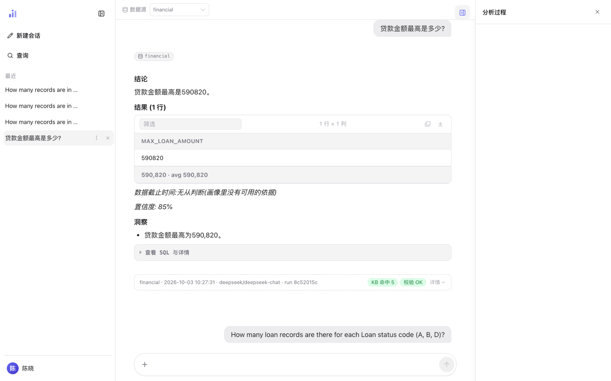
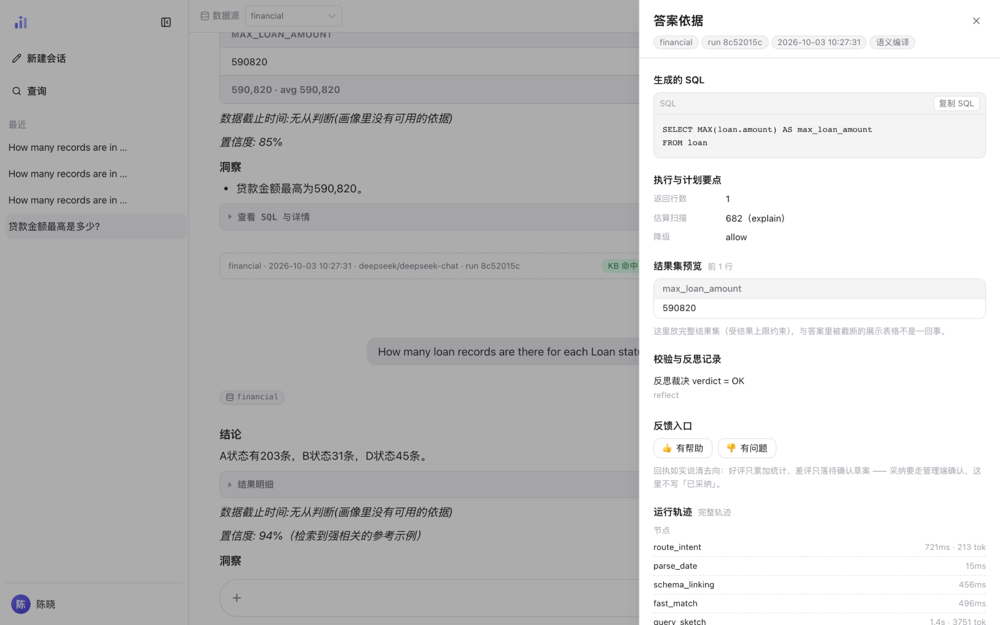
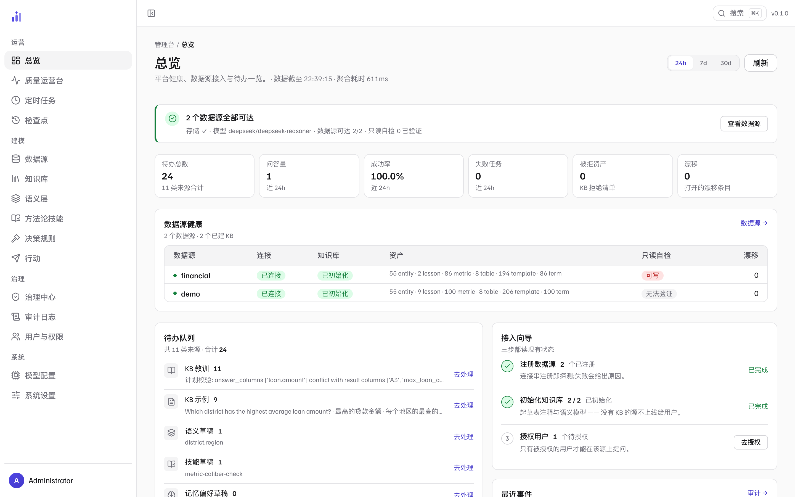
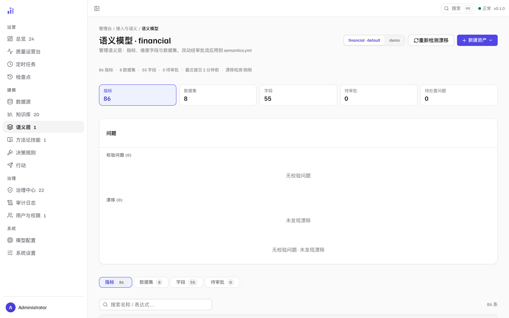

Trove 对话式数据问答
把一句自然语言提问，变成可解释的 SQL、图表与结论。 Trove 把确定性押在语义模型、节点化工作流与确定性安全层上， 只把真正需要模型的那一段交给 LLM。
一句话提问，一份可核对的答案
一个可自托管的问数分析 Agent：接入你自己的库，用自然语言提问，拿到 SQL、图表和一段有依据的结论。 提问与修正会沉淀进该数据源的知识库，准确率随使用增长。

1 2 3- 1结论——一句话给出答案本身。先读这里；数字有疑问再往下核。
- 2数据截止时间与置信度——截止时间是这次查询所依据数据的时间边界，无从判断时如实写「无从判断」，不猜一个日期。
- 3出处条——数据源、模型与运行 ID，加「KB 命中」与「校验 OK」两枚状态章。答案解剖 →
# 内置 BIRD 金融演示数据源，装完即可问
uv run trove --datasource demo
# 一次性提问，输出 JSON
echo "哪个地区的平均贷款金额最高?" | uv run trove-cli --datasource demo --print系统的形状——入口、编排、能力层与数据源各是什么——见 系统架构 · 全貌。
从这里开始
第一次来，按「快速上手」走一遍；想先建立心智模型，看「产品概念」；要对着界面操作，走图文指南。
为什么语义优先
大多数问数系统的准确率上限押在模型和检索上。Trove 换了一个问题： 这个数据源到底能回答什么——把这件事用一份可读的语义模型写清楚， 先划定边界，再谈生成。语义模型是生成的主视角，也是可答边界； 但它不是一道全有全无的闸门——编译结果是分级的，能答多少答多少，答不了的说清楚为什么：
PartialCompile：能解析的部分（join、过滤、分组）先权威化，
剩余组件交给生成节点按计划文本补齐，回答照常交付。
安全与可核对
问数系统要落地，安全边界不能是提示词里的一句请求。以下六条都在链路上生效—— 它们全部是代码，不是模型行为。
| 机制 | 做什么 | 位置 |
|---|---|---|
| 只读语句防火墙 | 对 SQL 做 AST 解析后判定，非只读语句在执行前被拒——不靠关键字黑名单。 | services/sql/guard.py:50 check_readonly |
| 执行代价护栏 | 执行前估算扫描行数（EXPLAIN 档，拿不到则退到元数据画像档），三路径判定：放行 / 降级加 LIMIT 执行 / 拒绝。估算不出来时走降级，而不是放行——没有下层兜底，所以这一轨 fail-closed。 | services/sql/budget.py:136 BudgetService · :236 decide |
| 执行前授权门 | 执行前判定，三道依次是 A1 主体存在 → A2 数据源在 grants 内 → A3 SQL 引用的表在语义层声明内。三道默认全拒：A1/A2 恒拒无开关；A3 默认 enforce（2026-10 切换，依据是全量快径示例 SQL 静态核验违规 0 条）。存量部署可显式写 authz.table_enforcement: warn 回退到观察档。 |
services/authz/enforcer.py:84 Authorizer · core/config.py:80 AuthzConfig |
| 字段级脱敏 | 结果集在进模型上下文之前按语义层声明改写（partial / hash / null）；声明了 hash 却取不到 salt 即拒绝执行，不降级为明文。 |
services/authz/masking.py:327 Masker |
| 不可信内容隔离 | 值进入模型上下文只有两条通道，两条都过同一个隔离核：命中注入短语即把整个值作废成中性标记，而不是剪掉命中的那一段（模型不能以为自己拿到的是不完整但可用的数据）。截断排在隔离之后，否则长文本里的注入串会被从中间切断、正则漏判。 | llm/untrusted.py:83 isolate_tree · prompts/loader.py:71 _isolate_vars |
| 人在环与审计 | SQL 执行前可交人过目，载荷无法识别时默认拒绝——这道门只在能读懂输入时才开。拒绝、字段改写、凭 scope 读原文三类各记一条审计（只记字段名与模式，从不记值）。 | workflow/nodes/hitl.py:65 make_hitl · agent/session.py:1608 _audit_authz |
更多机制——工具权限裁剪、模型预算护栏、以用户身份重放——见 安全边界与 Agent 能力总览的逐条展开。



怎么验证，而不是信谁的数字
这个页面不给准确率数字。问数系统的准确率高度依赖数据集、方言、语义模型完备度， 不同口径的数字放在一起没有意义——而且换个数据源就作废。所以这里给的是复现路径。
# 1. 换成你的题目集跑评测，代价敏感，按需手动跑
uv run python scripts/eval_bird.py --kb-dir <你的 KB 目录>
# 2. 拿到 baseline 后，之后每次改动都过一遍零成本回归门
uv run python scripts/eval_gate.py --baseline <旧结果> --current <新结果>第 2 步是这套评测设计的关键：判定落盘之后，回归检查不调用任何模型、不碰网络， 所以它可以进 CI，也可以在你提交前顺手跑一次。完整方法见 评测与回归门。
路线图与缺口
八个正在推进的方向。写的是方向与判据——做到什么程度算做到了，而不是承诺日期； 每条今天缺哪一块也直接写在表里，不藏在「进行中」。
| # | 方向 | 判据（做到什么程度算数） | 今天缺哪一块 |
|---|---|---|---|
| 01 | 语义漂移治理 | 漂移报告能精确到数据集 / 字段 / 指标条目，且不依赖人工巡检（门禁脚本已进 CI，渲染 L1–L2，区分「没漂移」与「没查成」）。 | L3/L4 未落地——「指标」这一格今天还进不了报告：L3 要探查活库取值，探测未接；L4 按设计只承接外部声明、不自行检测。 |
| 02 | 执行画像 | 画像数据来自真实执行观测，且采集本身不给查询增加可感知开销。 | 观测面——扫描量这一格六个方言都还没读，scanned_rows 恒空；「来自真实执行观测」今天只对行数成立。 |
| 03 | 已验证查询资产 | 复用不改变现有匹配判据的去向，且每条资产可追溯到它的确认人（治理维度随确认逐条写入，追溯已成立）。 | 台账——AssetLedger 已实现并有测试钉住，但没有任何生产构造点；status 还没参与检索加权。 |
| 04 | 可核验闭环 | 任意一条交付结论，都能沿着证据链走回原始数据。 | 上半段——执行证据（估算 / 实际 / 三态新鲜度）已落地；从结论回走到执行的这一段还没有，「任意一条」今天不成立。 |
| 05 | 语义分支评审 | 分支评审的结论对最终合入有约束力，而非仅供参考。 | 全部——所需形状（GateDecision / SemanticChange）已定义，但没有实现与调用点；八条里离得最远的一格。 |
| 06 | 身份鉴权与字段脱敏 | 判定落在执行前而不是结果后置过滤：未授权的表不发出查询，越权字段不进入模型上下文（脱敏在 LLM 之前），每一次拒绝、改写与凭 scope 读原文都留下审计。 | 执行侧已成立——三道执行门默认全拒（A3 已按 2026-10 切到 enforce）+ 脱敏 + 审计都在执行路径上。仍缺：这条方向的下一段，编译期收窄尚未开始。 |
| 07 | 成本归因与预算 | 归因覆盖全部模型调用路径，不存在「不产生记录」的调用。 | 两个盲区——LLM 调用点清单（AST 枚举）里仍有不记账的；且清单只看得见「谁在调模型」，看不见 prompt 的字符串构造（调用点没变、投递内容变了，它不红）。 |
| 08 | 不可信数据输入边界 | 新增数据源、新增提示词参数默认被扫，要放行必须显式登记；第三条路不存在。 | 隔离核 + 名字白名单（默认扫、放行须登记）+ 第三档信任级均已就位，有守卫与快照测试。盲区是清单只看得见「谁在调模型」、看不见字符串怎么拼——已写进测试文档串，由单一追加门补，不靠扩清单。 |
这套设计押在哪
把确定性押在可编排的节点化工作流、多库多模型抽象与确定性安全策略层上，而不是押在模型与检索的单点强度上——所以跨厂商、跨方言下行为更可预期。
Design bet: put determinism in an orchestratable node graph, a multi-database / multi-model abstraction, and a deterministic safety layer — rather than in the strength of one model or one retriever.